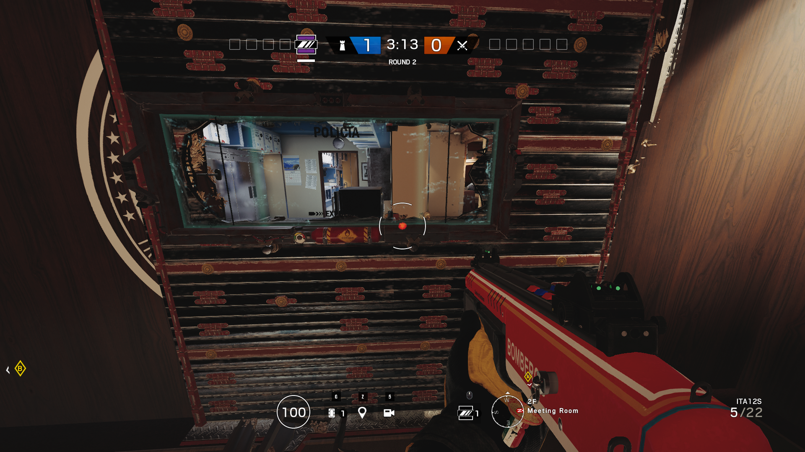

Drones are very important, they can watch flanks, drone a roamer out of their hiding spot, and give information to your team. It is a good idea to save the drone in prep-phase to give you and your team more use of that camera on wheels.
When starting to play R6, you should try to gravitate closer to the close range sights. Because, a lot of new players using the ACOG (Debatably the best sight in the game) will hold more passive angles and not pick fights. Having a more agressive playstyle is really good on attack, but you have to try to stay away from that while on defence. On defence, you have to emphasize on the enemy's screw up. That can be not droning before entering the building, not having anyone holding flanks, and not having certain roles to counter the site. Even though you can play as an agressive roamer, a smart player is going to be better than a player with only aim up their sleeves.

-ask your firendly neighbourhood bandit to electrify your window.
Team synergy is crucial. Having one operator do his/her job is fine, but if a different opperator helps or improves his/her gadget or setup, than it will be very hare to deal with. Having Bandit (can electrify reinforced walls) put down his battery on Mira's (can place down 2 one way mirrors on reinforced walls) Black Mirrors. It will be hard for Hardbreachers to counter it without help from anti gadget operators.